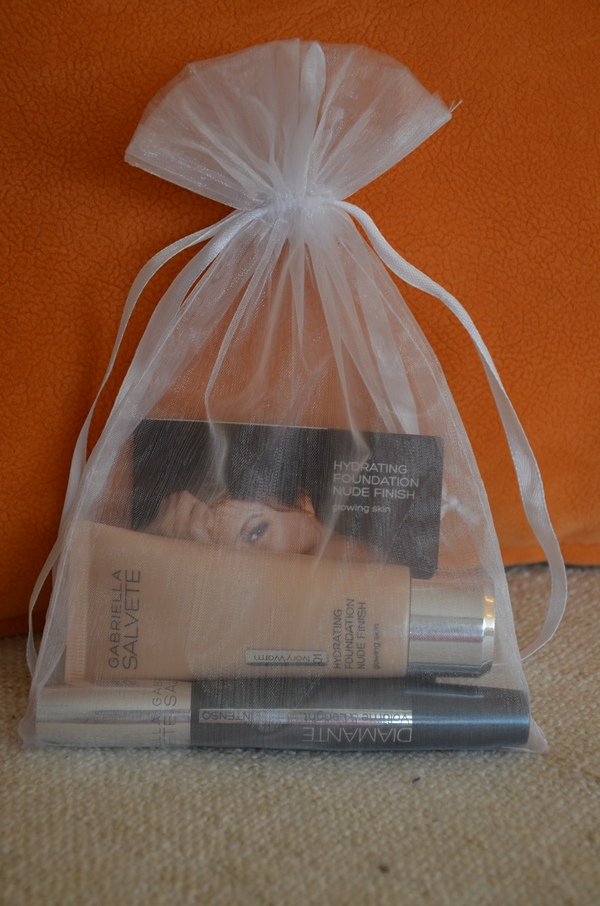
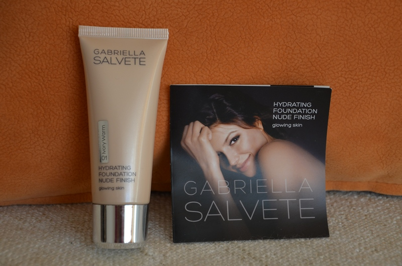
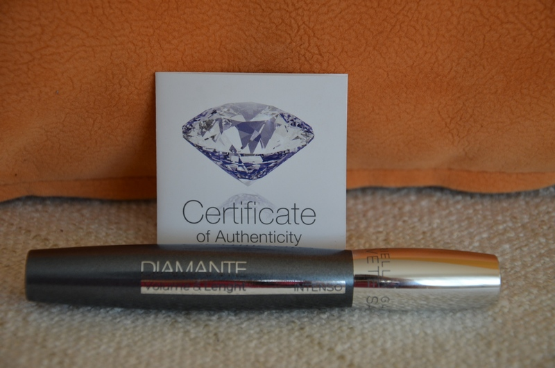

Že bych něco vyhrála, to se skutečně nestává příliš často. Popravdě nejsem ani moc soutěživý typ, a tak se soutěží účastním jen málokdy. Tím víc mě překvapilo, že se na mě jednoho pošmourného listopadového dne štěstí přecejen usmálo a paní pošťačka mi přinesla obálku s make-upem a řasenkou značky Gabriella Salvete. A protože tu máme rubriku DROGa, nezůstanete ušetřeni mé recenze :D…

Roztomilý pytlíček s výhrou :-)
Co si budeme povídat - značka Gabriella Salvete pro mě dosud byla synonymem pro lacinou a ne příliš kvalitní dekorativní kosmetiku, jejíž stojan jsem v drogeriích většinou bez zájmu obcházela. Nečekala jsem tedy od jejích produktů žádný velký zázrak. Na druhou stranu nový make-up jsem potřebovala jako sůl, protože ten od Rimmelu, který jste mohli zaznamenat v záříjové DROZe, mi přestal barevně vyhovovat a i po všech dalších stránkách byl děsnej. Dá se tedy říci, že jakýkoliv jiný make-up, který ho zastoupí, ve mně vyvolá nadšení, pokud mi barevně sedne a nebude flekatět a oxidovat na obličeji. V těchto dvou bodech mě nový hydratační make-up Gabriella Salvete (odstín 01 Ivory Warm) nezklamal. Odstín je jako dělaný pro všechny bledule a krásně splynul s mou průsvitnou pletí. Na můj vkus má make-up dost tekutou konzistenci, což samozřejmě znamená, že nemůže poskytnout stoprocentní krytí všech nedostatků. To je asi jediná věc, která mě na něm trochu mrzí - bez korektoru to prostě není ono. Na druhou stranu zas tak úplně špatné to krytí není. Pleť alespoň vypadá krásně přirozeně a ne jako maska. Jak moc je make-up hydratační, to nedokážu posoudit, ale určitě potvrdím, že suchá místa na pleti nezvýrazňuje. Další věc, které jsem se celkem obávala, byla výdrž make-upu na tváři. S tím si ale poradí pudr. Mám takové tušení, že bez něj by to nebyla žádná sláva. Na závěr jen dodám, že make-up obsahuje vysoký podíl vody, a proto je potřeba balení před použitím protřepat. Balení samo o sobě není špatné, ale já osobně mám radši make-upy s pumpičkou, z které se mi lépe dávkuje požadované množství. Tak či tak ale musím říct, že pro mě byl tento výrobek příjemným překvapením a kdybych si ho koupila sama, určitě bych nelitovala.

Hydratační make-up
Asi jste si všimli, že řasenka je kosmetickým produktem, který se v mých DROGa příspěvcích vůbec neobjevuje. Jednoduše proto, že mám své přírodní řasy ráda a přijdou mi hezké i bez zkrášlování, takže řasenku už roky nepoužívám. Když jsem ale na tuto slyšela tolik chvály, rozhodla jsem se, že ji přecejen otestuji.

Diamantová řasenka
Řasenka Diamante mi připadá docela fajn, i když z mého pohledu neprovádí s mými řasami nějakou razantní změnu. Výsledek působí velmi přirozeně. Pár lidí z mého okolí si ale všimlo, že “mám dnes nějaké pěkné oči” :D. Řasenka by totiž měla obsahovat diamantový prach, který rozzáří váš pohled :D. Asymetrický gumový kartáček mi naprosto vyhovuje - přijde mi, že díky němu se dají řasy lépe rozčesat a nevytváří se na nich žmolky. Osobně využívám spíš tu kratší část kartáčku, která řasy prodlouží až do nebes. Zahustit je moc nepotřebuji a bojím se, že bych si je slepila, protože tím, jak řasenku normálně nepoužívám, nemám v tom moc cvik a mohla by to být spíš kontraproduktivní snaha :D. Výdrž hodnotím kladně, i když jsem ji zatím nikdy netestovala v náročnějších podmínkách. Četla jsem, že s vlhkým počasím se tahle řasenka moc nekamarádí.
Vzhledem k tomu, jak jsem na řasenky nenáročná a celkově na tomto poli laikem, asi vám moje recenze moc nepomůže :D. Každopádně vím, že hodně lidí si ji chválilo a že jim za tu cenu (asi 150? - nevím jistě) přišla dobrá. Vypadá to tedy, že značka Gabriela Sallvete jde s úrovní produktů nahoru a možná si přecejen zaslouží o trochu více pozornosti.
Komentáře (4)
Komentáře jsou uzavřené.